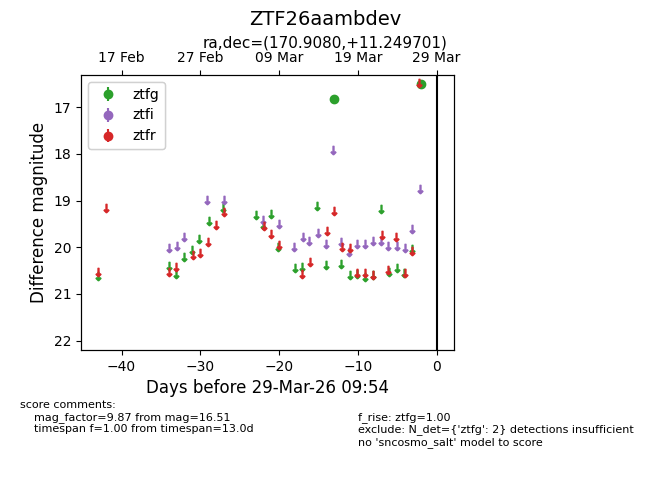
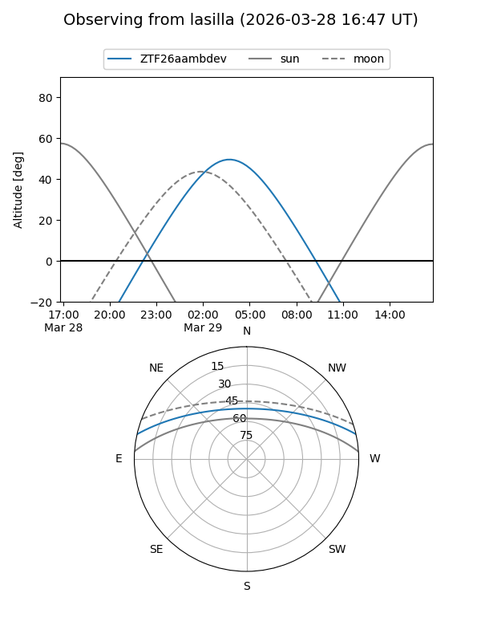
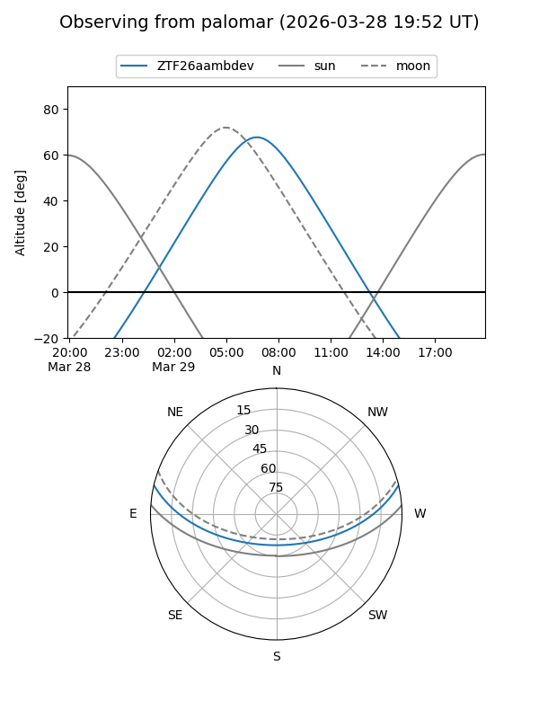

ZTF26aambdev
Target ZTF26aambdev at 2026-03-29 09:57
Aliases and brokers:
FINK: link
Lasair: link
ALeRCE: link
alt names
ZTF26aambdev (ztf,fink_ztf)
Coordinates:
equatorial (ra, dec) = 170.9080,+11.24970
equatorial (HMS+DMS) = 11:23:37.93,+11:14:58.92
galactic (l, b) = (246.2690,+63.96947)
Flags:
Photometry:
last ztfg=16.51
2 ztfg detections
Lightcurve

Visibility


Additional plots